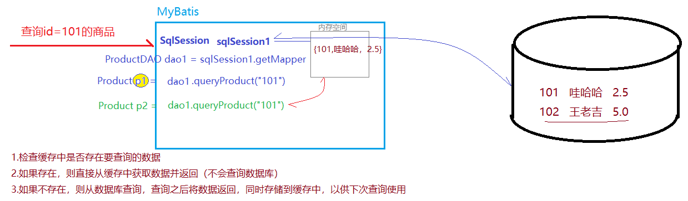

一、MyBatis简介
1.1 框架概念
框架，就是软件的半成品，完成了软件开发过程中的通用操作，程序员只需很少或者不用进行加工就能够实现特定的功能，从而简化开发人员在软件开发中的步骤，提高开发效率。
1.2 常用框架
MVC框架：简化了Servlet的开发步骤
持久层框架：完成数据库操作的框架
apache DBUtils
Hibernate
Spring JPA
MyBatisEJB3.0
胶水框架：Spring
SSM Spring SpringMVC MyBatis
SSH Spring Struts2 Hibernate
1.3 MyBatis介绍
MyBatis是一个半自动的ORM框架
ORM（Object Relational Mapping）对象关系映射，将Java中的一个对象与数据表中一行记录一一对应。
ORM框架提供了实体类与数据表的映射关系，通过映射文件的配置，实现对象的持久化。
MyBatis的前身是iBatis，iBatis是Apache软件基金会提供的一个开源项目
2010年iBatis迁移到Google code，正式更名为MyBatis
2013年迁移到Github托管
MyBatis特点：
支持自定义SQL、存储过程
对原有的JDBC进行了封装，几乎消除了所有JDBC代码，让开发者只需关注SQL本身
支持XML和注解配置方式自定完成ORM操作，实现结果映射
二、MyBatis框架部署
框架部署，就是将框架引入到我们的项目中
2.1 创建Maven项目
2.2 在项目中添加MyBatis依赖
在pom.xml中添加依赖
XML <!-- https://mvnrepository.com/artifact/mysql/mysql-connector-java -->
<dependency>
<groupId> mysql</groupId>
<artifactId> mysql-connector-java</artifactId>
<version> 5.1.47</version>
</dependency>
<!-- https://mvnrepository.com/artifact/org.mybatis/mybatis -->
<dependency>
<groupId> org.mybatis</groupId>
<artifactId> mybatis</artifactId>
<version> 3.4.6</version>
</dependency>
2.3 创建MyBatis配置文件
在resources中创建名为mybatis-config.xml的文件
三、MyBatis框架使用
案例：学生信息的数据库操作
3.1 创建数据表
3.2 创建实体类
Student.java
3.3 创建DAO接口，定义操作方法
StudentDAO.java
3.4 创建DAO接口的映射文件
在resources目录下，新建名为mappers文件夹
在mappers中新建名为StudentMapper.xml的映射文件（根据模板创建）
在映射文件中对DAO中定义的方法进行实现：
XML <?xml version="1.0" encoding="UTF-8" ?>
<!DOCTYPE mapper
PUBLIC "-//mybatis.org//DTD Mapper 3.0//EN"
"http://mybatis.org/dtd/mybatis-3-mapper.dtd">
<!--mapper文件相当于DAO接口的‘实现类’，namespace属性要指定`实现`DAO接口的全限定名-->
<mapper namespace= "com.qfedu.dao.StudentDAO" >
<insert id= "insertStudent" >
insert into tb_students(stu_num,stu_name,stu_gender,stu_age)
values(#{stuNum},#{stuName},#{stuGender},#{stuAge})
</insert>
<delete id= "deleteStudent" >
delete from tb_students where stu_num=#{stuNum}
</delete>
</mapper>
3.5 将映射文件添加到主配置文件
mybatis-config.xml
四、单元测试
4.1 添加单元测依赖
XML <dependency>
<groupId> junit</groupId>
<artifactId> junit</artifactId>
<version> 4.12</version>
</dependency>
4.2 创建单元测试类
在被测试类名后alt+insert --- 选择Test
4.3 测试代码
Java package com.qfedu.dao ;
import com.qfedu.pojo.Student ;
import org.apache.ibatis.io.Resources ;
import org.apache.ibatis.session.SqlSession ;
import org.apache.ibatis.session.SqlSessionFactory ;
import org.apache.ibatis.session.SqlSessionFactoryBuilder ;
import java.io.IOException ;
import java.io.InputStream ;
import static org.junit.Assert.* ;
public class StudentDAOTest {
@org.junit.Test
public void insertStudent () {
try {
//加载mybatis配置文件
InputStream is = Resources . getResourceAsStream ( "mybatis-config.xml" );
SqlSessionFactoryBuilder builder = new SqlSessionFactoryBuilder ();
//会话工厂
SqlSessionFactory factory = builder . build ( is );
//会话（连接）
SqlSession sqlSession = factory . openSession ();
//通过会话获取DAO对象
StudentDAO studentDAO = sqlSession . getMapper ( StudentDAO . class );
//测试StudentDAO中的方法
int i = studentDAO . insertStudent ( new Student ( 0 , "10001" , "张三" , "男" , 21 ));
//需要手动提交
sqlSession . commit ();
System . out . println ( i );
} catch ( IOException e ) {
e . printStackTrace ();
}
}
@org.junit.Test
public void deleteStudent () {
}
}
五、MyBatis的CRUD操作
案例:学生信息的增删查改
5.1 添加操作
略
5.2 删除操作
根据学号删除一条学生信息
在StudentMapper.xml中对接口方法进行“实现”
测试：在StudentDAO的测试类中添加测试方法
5.3 修改操作
根据学生学号，修改其他字段信息
StudentDAO
在StudentMapper.xml中“实现”接口中定义的修改方法
StudentMapper.xml
5.4 查询操作-查询所有
在StudentMapper.xml中“实现”DAO中定义的方法
StudentMapper.xml
5.5 查询操作-查询一条记录
根据学号查询一个学生信息
StudentDAO
在StudentDAOMapper.xml中配置StudentDAO接口的方法实现——SQL
StudentDAOMapper.xml
5.6 查询操作-多参数查询
分页查询（参数 start ， pageSize）
在StudentDAO中定义操作方法，如果方法有多个参数，使用@Param注解声明参数的别名
StudentDAO
在StudentMapper.xml配置sql时，使用#{别名}获取到指定的参数
注意arg0,arg1...或者param1,param2,...获取参数
5.7 查询操作-查询总记录数
StudentDAO
在StudentMapper.xml配置sql，通过resultType指定当前操作的返回类型为int
5.8 添加操作回填生成的主键
StduentMapper.xml的添加操作标签——insert
XML <!-- useGeneratedKeys 设置添加操作是否需要回填生成的主键 -->
<!-- keyProperty 设置回填的主键值赋值到参数对象的哪个属性 -->
<insert id= "insertStudent" useGeneratedKeys= "true" keyProperty= "stuId" >
insert into tb_students(stu_num, stu_name, stu_gender, stu_age)
values (#{stuNum}, #{stuName}, #{stuGender}, #{stuAge})
</insert>
六、MyBatis工具类封装
Java public class MyBatisUtil {
private static SqlSessionFactory factory ;
private static final ThreadLocal < SqlSession > local = new ThreadLocal < SqlSession > ();
static {
try {
InputStream is = Resources . getResourceAsStream ( "mybatis-config.xml" );
SqlSessionFactoryBuilder builder = new SqlSessionFactoryBuilder ();
factory = builder . build ( is );
} catch ( IOException e ) {
e . printStackTrace ();
}
}
public static SqlSessionFactory getFactory (){
return factory ;
}
public static SqlSession getSqlSession (){
SqlSession sqlSession = local . get ();
if ( sqlSession == null ){
sqlSession = factory . openSession ();
local . set ( sqlSession );
}
return sqlSession ;
}
public static < T extends Object > T getMapper ( Class < T > c ){
SqlSession sqlSession = getSqlSession ();
return sqlSession . getMapper ( c );
}
}
七、事务管理
SqlSession 对象
getMapper(DAO.class) : 获取Mapper（DAO接口的实例）
事务管理
7.1 手动提交事务
sqlSession.commit();提交事务sqlSession.rollback();事务回滚
测试类中进行事务管理
Java @Test
public void insertStudent () {
SqlSession sqlSession = MyBatisUtil . getSqlSession ();
//1.当我们获取sqlSession对象时，就默认开启了事务
try {
//通过会话获取DAO对象
StudentDAO studentDAO = sqlSession . getMapper ( StudentDAO . class );
//测试StudentDAO中的方法
Student student = new Student ( 0 , "10005" , "Lily" , "女" , 21 );
int i = studentDAO . insertStudent ( student );
//2.操作完成并成功之后，需要手动提交
sqlSession . commit ();
} catch ( Exception e ){
//3.当操作出现异常，调用rollback进行回滚
sqlSession . rollback ();
}
}
业务逻辑层手动事务管理
Java public class StudentServiceImpl implements StudentService {
public boolean addStudent ( Student student ) {
boolean b = false ;
SqlSession sqlSession = MyBatisUtil . getSqlSession ();
try {
StudentDAO studentDAO = sqlSession . getMapper ( StudentDAO . class );
int i = studentDAO . insertStudent ( student );
b = i > 0 ;
sqlSession . commit ();
} catch ( Exception e ){
sqlSession . rollback ();
}
return b ;
}
}
7.2 自动提交事务
通过SqlSessionFactory调用openSession方法获取SqlSession对象时，可以通过参数设置事务是否自动提交：
如果参数设置为true，表示自定提交事务： factory.openSession(true);
如果参数设置为false，或者不设置参数，表示手动提交：factory.openSession();/factory.openSession(false);
MyBatisUtil 优化
Java public class MyBatisUtil {
private static SqlSessionFactory factory ;
private static final ThreadLocal < SqlSession > local = new ThreadLocal < SqlSession > ();
static {
try {
InputStream is = Resources . getResourceAsStream ( "mybatis-config.xml" );
SqlSessionFactoryBuilder builder = new SqlSessionFactoryBuilder ();
factory = builder . build ( is );
} catch ( IOException e ) {
e . printStackTrace ();
}
}
public static SqlSessionFactory getFactory (){
return factory ;
}
private static SqlSession getSqlSession ( boolean isAutoCommit ){
SqlSession sqlSession = local . get ();
if ( sqlSession == null ){
sqlSession = factory . openSession ( isAutoCommit );
local . set ( sqlSession );
}
return sqlSession ;
}
//手动事务管理
public static SqlSession getSqlSession (){
return getSqlSession ( false );
}
//自动事务提交
public static < T extends Object > T getMapper ( Class < T > c ){
SqlSession sqlSession = getSqlSession ( true );
return sqlSession . getMapper ( c );
}
}
测试操作
Java @Test
public void testDeleteStudent () {
StudentDAO studentDAO = MyBatisUtil . getMapper ( StudentDAO . class );
int i = studentDAO . deleteStudent ( "10001" );
}
业务逻辑层自动事务管理
Java public class StudentServiceImpl implements StudentService {
private StudentDAO studentDAO = MyBatisUtil . getMapper ( StudentDAO . class );
public boolean addStudent ( Student student ) {
int i = studentDAO . insertStudent ( student );
boolean b = i > 0 ;
return b ;
}
}
八、MyBatis主配置文件
mybatis-config.xml 是MyBatis框架的主配置文件，只要用于配置MyBatis数据源及属性信息
8.1 properties标签
用于设置键值对，或者加载属性文件
在resources目录下创建jdbc.properties文件，配置键值对如下：
Properties mysql_driver = com.mysql.jdbc.Driver
mysql_url = jdbc:mysql://localhost:3306/db_2010_fmwy?characterEncoding=utf-8
mysql_username = root
mysql_password = admin123
在mybatis-config.xml中通过properties标签引用jdbc.properties文件;引入之后，在配置environment时可以直接使用jdbc.properties的key获取对应的value
mybatis-config.xml
8.2 settings标签
XML <!--设置mybatis的属性-->
<settings>
<!-- 启动二级缓存-->
<setting name= "cacheEnabled" value= "true" />
<!-- 启动延迟加载 -->
<setting name= "lazyLoadingEnabled" value= "true" />
</settings>
8.3 typeAliases标签
XML <!--typeAliases标签用于给实体类取别名，在映射文件中可以直接使用别名来替代实体类的全限定名-->
<typeAliases>
<typeAlias type= "com.qfedu.pojo.Student" alias= "Student" ></typeAlias>
<typeAlias type= "com.qfedu.pojo.Book" alias= "Book" ></typeAlias>
</typeAliases>
8.4 plugins标签
XML <!--plugins标签，用于配置MyBatis插件（分页插件）-->
<plugins>
<plugin interceptor= "" ></plugin>
</plugins>
8.5 environments标签
XML <!-- 在environments配置数据库连接信息 -->
<!-- 在environments标签中可以定义多个environment标签，每个environment标签可以定义一套连接配置 -->
<!-- default属性，用来指定使用哪个environment标签 -->
<environments default= "mysql" >
<!-- environment 标签用于配置数据库连接信息 -->
<environment id= "mysql" >
<!--transactionManager标签用于配置数据库管理方式
type="JDBC" 可以进行事务的提交和回滚操作
type="MANAGED" 依赖容器完成事务管理，本身不进行事务的提交和回滚操作 -->
<transactionManager type= "JDBC" ></transactionManager>
<!--dataSource标签就是用来配置数据库连接信息 POOLED|UNPOOLED -->
<dataSource type= "POOLED" >
<property name= "driver" value= "${mysql_driver}" />
<property name= "url" value= "${mysql_url}" />
<property name= "username" value= "${mysql_username}" />
<property name= "password" value= "${mysql_password}" />
</dataSource>
</environment>
</environments>
8.6 mappers标签
加载映射配置（映射文件、DAO注解）
XML <!--mappers标签用于载入映射文件-->
<mappers>
<mapper resource= "mappers/StudentMapper.xml" ></mapper>
</mappers>
九、映射文件
9.1 MyBatis Mapper初始化
XML文件解析：读取xml文件中的标签配置封装到Java对象中
9.2 mapper根标签
mapper文件相当于DAO接口的‘实现类’，namespace属性要指定实现DAO接口的全限定名
9.3 insert标签
声明添加操作（sql: insert ...）
常用属性
id属性，绑定对应DAO接口中的方法
parameterType属性，用以指定接口中对应方法的参数类型（可省略）
useGeneratedKeys属性， 设置添加操作是否需要回填生成的主键
keyProperty属性，指定回填的id设置到参数对象中的哪个属性
timeout属性，设置此操作的超时时间，如果不设置则一直等待
主键回填
XML <insert id= "insertStudent" useGeneratedKeys= "true" keyProperty= "stuId" >
insert into tb_students(stu_num, stu_name, stu_gender, stu_age)
values (#{stuNum}, #{stuName}, #{stuGender}, #{stuAge})
</insert>
XML <insert id= "insertStudent" >
<selectKey keyProperty= "stuId" resultType= "java.lang.Integer" >
select last_insert_id()
</selectKey>
insert into tb_students(stu_num, stu_name, stu_gender, stu_age)
values (#{stuNum}, #{stuName}, #{stuGender}, #{stuAge})
</insert>
9.4 delete标签
声明删除操作
9.5 update标签
声明修改操作
9.6 select标签
声明查询操作
id属性， 指定绑定方法的方法名
parameterType属性，设置参数类型
resultType属性，指定当前sql返回数据封装的对象类型（实体类）
resultMap属性，指定从数据表到实体类的字段和属性的对应关系
useCache属性，指定此查询操作是否需要缓存
timeout属性，设置超时时间
9.7 resultMap标签
XML <!-- resultMap标签用于定义实体类与数据表的映射关系（ORM） -->
<resultMap id= "studentMap" type= "Student" >
<id column= "sid" property= "stuId" />
<result column= "stu_num" property= "stuNum" />
<result column= "stu_name" property= "stuName" />
<result column= "stu_gender" property= "stuGender" />
<result column= "stu_age" property= "stuAge" />
</resultMap>
9.8 cache标签
设置当前DAO进行数据库操作时的缓存属性设置
XML <cache type= "" size= "" readOnly= "false" />
9.9 sql和include
SQL片段
XML <sql id= "wanglaoji" > sid , stu_num , stu_name , stu_gender , stu_age</sql>
<select id= "listStudents" resultMap= "studentMap" >
select <include refid= "wanglaoji" /> from tb_students
</select>
十、分页插件
分页插件是一个独立于MyBatis框架之外的第三方插件;
10.1 添加分页插件的依赖
PageHelper
XML <!-- pagehelper分页插件 -->
<dependency>
<groupId> com.github.pagehelper</groupId>
<artifactId> pagehelper</artifactId>
<version> 5.1.10</version>
</dependency>
10.2 配置插件
在mybatis的主配置文件mybatis-config.xml中通过plugins标签进行配置
XML <!--plugins标签，用于配置MyBatis插件（分页插件）-->
<plugins>
<plugin interceptor= "com.github.pagehelper.PageInterceptor" ></plugin>
</plugins>
10.3 分页实例
对学生信息进行分页查询
Java @Test
public void testListStudentsByPage () {
StudentDAO studentDAO = MyBatisUtil . getMapper ( StudentDAO . class ); //sqlSession
PageHelper . startPage ( 2 , 4 );
List < Student > students = studentDAO . listStudents ();
PageInfo < Student > pageInfo = new PageInfo < Student > ( students );
//pageInfo中就包含了数据及分页信息
}
带条件分页
Java @Test
public void testListStudentsByPage () {
StudentDAO studentDAO = MyBatisUtil . getMapper ( StudentDAO . class ); //sqlSession
PageHelper . startPage ( 2 , 4 );
//List<Student> students = studentDAO.listStudents();
List < Student > list = studentDAO . listStudentsByGender ( "女" );
PageInfo < Student > pageInfo = new PageInfo < Student > ( list );
//pageInfo中就包含了数据及分页信息
}
十一、关联映射
11.1 实体关系
实体——数据实体，实体关系指的就是数据与数据之间的关系
例如：用户和角色、房屋和楼栋、订单和商品
实体关系分为以下四种：
一对一关联
实例：人和身份证、学生和学生证、用户基本信息和详情
数据表关系：
唯一外键关联
一对多关联 、多对一关联
实例：
一对多： 班级和学生 、 类别和商品、楼栋和房屋
多对一：学生和班级 、 商品和类别
数据表关系：
多对多关联
实例：用户和角色、角色和权限、房屋和业主、学生和社团、订单和商品
数据表关系：建立第三张关系表添加两个外键分别与两张表主键进行关联
用户(user_id) 用户角色表(uid,rid) 角色(role_id)
11.2 创建项目，部署MyBatis框架
创建web项目（maven）
XML <!-- 添加web依赖 -->
<dependency>
<groupId> javax.servlet</groupId>
<artifactId> jsp-api</artifactId>
<version> 2.0</version>
<scope> provided</scope>
</dependency>
<dependency>
<groupId> javax.servlet</groupId>
<artifactId> javax.servlet-api</artifactId>
<version> 4.0.1</version>
<scope> provided</scope>
</dependency>
部署MyBatis框架
XML <!-- https://mvnrepository.com/artifact/org.mybatis/mybatis -->
<dependency>
<groupId> org.mybatis</groupId>
<artifactId> mybatis</artifactId>
<version> 3.4.6</version>
</dependency>
<!-- https://mvnrepository.com/artifact/mysql/mysql-connector-java -->
<dependency>
<groupId> mysql</groupId>
<artifactId> mysql-connector-java</artifactId>
<version> 5.1.47</version>
</dependency>
Java public class MyBatisUtil {
private static SqlSessionFactory factory ;
private static final ThreadLocal < SqlSession > local = new ThreadLocal < SqlSession > ();
static {
try {
InputStream is = Resources . getResourceAsStream ( "mybatis-config.xml" );
factory = new SqlSessionFactoryBuilder (). build ( is );
} catch ( IOException e ) {
e . printStackTrace ();
}
}
public static SqlSessionFactory getSqlSessionFactory (){
return factory ;
}
public static SqlSession getSqlSession ( boolean isAutoCommit ){
SqlSession sqlSession = local . get ();
if ( sqlSession == null ){
sqlSession = factory . openSession ( isAutoCommit );
local . set ( sqlSession );
}
return sqlSession ;
}
public static SqlSession getSqlSession (){
return getSqlSession ( false );
}
public static < T extends Object > T getMapper ( Class < T > c ){
SqlSession sqlSession = getSqlSession ( true );
return sqlSession . getMapper ( c );
}
}
11.3 一对一关联
实例：用户---详情
11.3.1 创建数据表
SQL -- 用户信息表
create table users (
user_id int primary key auto_increment ,
user_name varchar ( 20 ) not null unique ,
user_pwd varchar ( 20 ) not null ,
user_realname varchar ( 20 ) not null ,
user_img varchar ( 100 ) not null
);
-- 用户详情表
create table details (
detail_id int primary key auto_increment ,
user_addr varchar ( 50 ) not null ,
user_tel char ( 11 ) not null ,
user_desc varchar ( 200 ),
uid int not null unique
-- constraint FK_USER foreign key(uid) references users(user_id)
);
11.3.2 创建实体类
User
Java @Data
@NoArgsConstructor
@AllArgsConstructor
@ToString
public class User {
private int userId ;
private String userName ;
private String userPwd ;
private String userRealname ;
private String userImg ;
}
Detail
Java @Data
@NoArgsConstructor
@AllArgsConstructor
@ToString
public class Detail {
private int detailId ;
private String userAddr ;
private String userTel ;
private String userDesc ;
private int userId ;
}
11.3.3 添加操作（事务）
11.3.4 一对一关联查询
在查询用户的同时关联查询出与之对应的详情
实体
User
Detail
映射文件
连接查询
11.4 一对多关联
案例：班级(1)—学生(n)
11.4.1 创建数据表
SQL -- 创建班级信息表
create table classes (
cid int primary key auto_increment ,
cname varchar ( 30 ) not null unique ,
cdesc varchar ( 100 )
);
-- 创建学生信息表
create table students (
sid char ( 5 ) primary key ,
sname varchar ( 20 ) not null ,
sage int not null ,
scid int not null
);
11.4.2 创建实体类
Clazz
Student
11.4.3 关联查询
当查询一个班级的时候， 要关联查询出这个班级下的所有学生
连接查询
连接查询映射配置
子查询
11.5 多对一关联
实例：学生(n)—班级(1)
当查询一个学生的时候，关联查询这个学生所在的班级信息
11.5.1 创建实体类
Student
Clazz
11.5.2 关联查询
连接查询
连接查询映射配置
子查询
子查询映射配置
11.6 多对多关联
案例：学生（m）—课程（n）
11.6.1 创建数据表
SQL -- 学生信息表（如上）
-- 课程信息表
create table courses (
course_id int primary key auto_increment ,
course_name varchar ( 50 ) not null
);
-- 选课信息表/成绩表(学号、课程号、成绩)
create table grades (
sid char ( 5 ) not null ,
cid int not null ,
score int not null
);
11.6.2 关联查询
查询学生时，同时查询学生选择的课程
Student
Course
根据课程编号查询课程时，同时查询选择了这门课程的学生
Student
Course
连接查询映射配置
子查询映射配置
十二、动态SQL
交友网：珍爱网、百合网 筛选心仪对象 性别 年龄 城市 身高
电商：淘宝、京东 筛选商品 羽毛球拍 品牌 价格
方江鹏 性别 女 select * from members where gender='女'
罗彪 性别 女 年龄 18-23 select * from members where gender='女' and age >=18 and age <=23
张三 年龄 城市 select * from members where age >=18 and age <=23 and city=''
用户的筛选条件不同，我们完成筛选执行的SQL也不一样；我们可以通过穷举来一一的完成不同条件的筛选，但是这种实现思路过于繁琐和复杂，MyBatis就提供了动态SQL的配置方式来实现多条件查询。
12.1 什么是动态SQL？
根据查询条件动态完成SQL的拼接
12.2 动态SQL使用案例
案例：心仪对象搜索
12.2.1 创建数据表
SQL create table members (
member_id int primary key auto_increment ,
member_nick varchar ( 20 ) not null unique ,
member_gender char ( 2 ) not null ,
member_age int not null ,
member_city varchar ( 30 ) not null
);
12.2.2 创建实体类
Java @Data
@NoArgsConstructor
@AllArgsConstructor
@ToString
public class Member {
private int memberId ;
private String memberNick ;
private String memberGender ;
private int memberAge ;
private String memberCity ;
}
12.2.3 创建DAO接口
在DAO接口中定义一个多条件查询的方法
Java public interface MemberDAO {
//在多条件查询中，如果查询条件不确定，可以直接使用HashMap作为参数
//优点：无需单独定义传递查询条件的类
//缺点：当向Map中存放参数时，key必须与动态sql保持一致（）
//public List<Member> searchMember(HashMap<String,Object> params);
// 也可以定义专门用于存放查询条件的实体类存放参数
//优点：设置参数时无需关注属性名
//缺点：需要单独定义一个类来封装参数
public List < Member > searchMember ( MemberSearchCondition params );
}
12.3 if
XML <resultMap id= "memberMap" type= "Member" >
<id column= "member_id" property= "memberId" />
<result column= "member_nick" property= "memberNick" />
<result column= "member_gender" property= "memberGender" />
<result column= "member_age" property= "memberAge" />
<result column= "member_city" property= "memberCity" />
</resultMap>
<select id= "searchMember" resultMap= "memberMap" >
select member_id,member_nick,member_gender,member_age,member_city
from members
where 1=1
<if test= "gender != null" > <!--gender 就是参数对象的属性/参数Map的key-->
and member_gender=#{gender}
</if>
<if test= "minAge != null" >
and member_age > = #{minAge} <!-- > -->
</if>
<if test= "maxAge != null" >
and member_age < = #{maxAge} <!-- < -->
</if>
<if test= "city != null" >
and member_city = #{city}
</if>
</select>
测试
Java @Test
public void testSearchMember () {
HashMap < String , Object > params = new HashMap < String , Object > ();
params . put ( "gender" , "女" );
params . put ( "minAge" , 18 );
//params.put("maxAge",23);
params . put ( "city" , "武汉" );
//-----------------------------------------------------------------------
MemberSearchCondition params2 = new MemberSearchCondition ();
params2 . setGender ( "女" );
//params2.setMinAge(21);
//params2.setMaxAge(30);
//params2.setCity("武汉");
//==========================================================================
MemberDAO memberDAO = MyBatisUtil . getMapper ( MemberDAO . class );
List < Member > members = memberDAO . searchMember ( params2 );
for ( Member m : members ) {
System . out . println ( m );
}
}
12.4 where
XML <select id= "searchMember" resultMap= "memberMap" >
select member_id,member_nick,member_gender,member_age,member_city
from members
<where>
<if test= "gender != null" > <!--gender 就是参数对象的属性/参数Map的key-->
and member_gender=#{gender}
</if>
<if test= "minAge != null" >
and member_age > = #{minAge} <!-- > -->
</if>
<if test= "maxAge != null" >
and member_age < = #{maxAge} <!-- < -->
</if>
<if test= "city != null" >
and member_city = #{city}
</if>
</where>
order by member_age
</select>
12.5 trim
XML <select id= "searchMember" resultMap= "memberMap" >
select member_id,member_nick,member_gender,member_age,member_city
from members
<trim prefix= "where" prefixOverrides= "and | or" suffix= "order by member_age" >
<if test= "gender != null" > <!--gender 就是参数对象的属性/参数Map的key-->
and member_gender=#{gender}
</if>
<if test= "minAge != null" >
and member_age > = #{minAge} <!-- > -->
</if>
<if test= "maxAge != null" >
and member_age < = #{maxAge} <!-- < -->
</if>
<if test= "city != null" >
and member_city = #{city}
</if>
</trim>
</select>
12.6 foreach
Java public interface MemberDAO {
//查询指定城市的会员
public List < Member > searchMemberByCity ( List < String > cities );
}
XML <select id= "searchMemberByCity" resultMap= "memberMap" >
select member_id,member_nick,member_gender,member_age,member_city
from members where member_city in
<foreach collection= "list" item= "cityName" separator= "," open= "(" close= ")" >
#{cityName}
</foreach>
</select>
测试
Java @Test
public void searchMemberByCity () {
List < String > cities = new ArrayList < String > ();
cities . add ( "厦门" );
cities . add ( "宜昌" );
MemberDAO memberDAO = MyBatisUtil . getMapper ( MemberDAO . class );
List < Member > members = memberDAO . searchMemberByCity ( cities );
for ( Member m : members ) {
System . out . println ( m );
}
}
十三、模糊查询
案例：根据昵称查询会员信息（模糊匹配 like）
13.1 模糊查询实现
13.1.1 DAO
Java public interface MemberDAO {
//根据昵称查询用户信息——模糊查询
// 模糊查询需要使用${}取值，与sql进行拼接
// 在使用${}时，即使只有一个参数也需要使用@Param注解声明参数的key（非String对象参数可以不用声明）
public List < Member > searchMemberByNick ( @Param ( "keyWord" ) String keyWord );
}
13.1.2 映射文件
XML <!--如果参数时String类型，需要parameterType声明参数类型-->
<select id= "searchMemberByNick" parameterType= "java.lang.String" resultMap= "memberMap" >
select member_id,member_nick,member_gender,member_age,member_city
from members
where member_nick like '%${keyWord}%'
</select>
13.1.3 测试
Java @Test
public void testSearchMemberByNick (){
MemberDAO memberDAO = MyBatisUtil . getMapper ( MemberDAO . class );
List < Member > members = memberDAO . searchMemberByNick ( "花" );
for ( Member m : members ) {
System . out . println ( m );
}
}
13.2 #{}和${}的区别
${key} 表示获取参数，先获取参数的值拼接到SQL语句中，再编译执行SQL语句;可能引起SQL注入问题
{key} 表示获取参数，先完成SQL编译(预编译)，预编译之后再将获取的参数设置到SQL与中 ，可以避免SQL注入问题
十四、MyBatis日志配置
MyBatis做为一个封装好的ORM框架，其运行过程我们没办法跟踪，为了让开发者了解MyBatis执行流程及每个执行步骤所完成的工作，MyBatis框架本身支持log4j日志框架，对运行的过程进行跟踪记录。我们只需对MyBatis进行相关的日志配置，就可以看到MyBatis运行过程中的日志信息。
14.1 添加日志框架依赖
XML <!-- https://mvnrepository.com/artifact/log4j/log4j -->
<dependency>
<groupId> log4j</groupId>
<artifactId> log4j</artifactId>
<version> 1.2.17</version>
</dependency>
14.2 添加日志配置文件
在resources目录下创建名为 log4j.properties文件
在 log4j.properties文件配置日志输出的方式
Properties # 声明日志的输出级别及输出方式
log4j.rootLogger = DEBUG,stdout
# MyBatis logging configuration...
log4j.logger.org.mybatis.example.BlogMapper = TRACE
# Console output...
log4j.appender.stdout = org.apache.log4j.ConsoleAppender
log4j.appender.stdout.layout = org.apache.log4j.PatternLayout
# 定义日志的打印格式 %t 表示线程名称 %5p 日志级别 %msg日志信息
log4j.appender.stdout.layout.ConversionPattern = [%t] %5p - %msg \: %m%n
14.3 日志信息的级别
在使用日志框架输出日志信息的时候，会根据输出的日志信息的重要程度分为5个级别
级别
说明
DEBUG
输出调试信息
INFO
输出提示信息
WARN
输出警告信息
ERROR
一般性错误信息
FATAL
致命性错误信息
十五、配置数据库连接池-整合Druid
MyBatis做为一个ORM框架，在进行数据库操作时是需要和数据库连接连接的，MyBatis支持基于数据库连接池的连接创建方式。
当我们配置MyBatis数据源时，只要配置了dataSource标签的type属性值为POOLED时，就可以使用MyBatis内置的连接池管理连接。
如果我们想要使用第三方的数据库连接池，则需进行自定义配置。
15.1 常见的连接池
DBCP
C3P0
Druid 性能也比较好，提供了比较便捷的监控系统
Hikari 性能最好
功能
dbcp
druid
c3p0
HikariCP
是否支持PSCache
是
是
是
否
监控
jmx
jmx/log/http
jmx,log
jmx
扩展性
弱
好
弱
弱
sql拦截及解析
无
支持
无
无
代码
简单
中等
复杂
简单
更新时间
2015.8.6
2015.10.10
2015.12.09
2015.12.3
特点
依赖于common-pool
阿里开源，功能全面
历史久远，代码逻辑复杂，且不易维护
优化力度大，功能简单，起源于boneCP
连接池管理
LinkedBlockingDeque
数组
threadlocal+CopyOnWriteArrayList
15.2 添加Druid依赖
XML <!-- https://mvnrepository.com/artifact/com.alibaba/druid -->
<dependency>
<groupId> com.alibaba</groupId>
<artifactId> druid</artifactId>
<version> 1.2.5</version>
</dependency>
15.3 创建Druid连接池工厂
Java public class DruidDataSourceFactory extends PooledDataSourceFactory {
public DruidDataSourceFactory () {
this . dataSource = new DruidDataSource ();
}
}
15.4 将DruidDataSourceFactory配置给MyBatis数据源
XML <environments default= "mysql" >
<environment id= "mysql" >
<transactionManager type= "JDBC" ></transactionManager>
<!-- POOLED 使用MyBatis内置的连接池实现 -->
<!-- mybatis需要一个连接池工厂，这个工厂可以产生数据库连接池 PooledDataSourceFactory -->
<dataSource type= "com.qfedu.utils.DruidDataSourceFactory" >
<property name= "driverClass" value= "${driver}" />
<property name= "jdbcUrl" value= "${url}" />
<property name= "username" value= "${username}" />
<property name= "password" value= "${password}" />
</dataSource>
</environment>
</environments>
十六、MyBatis缓存
MyBatis是基于JDBC的封装，使数据库操作更加便捷；MyBatis除了对JDBC操作步骤进行封装之外也对其性能进行了优化：
在MyBatis引入缓存机制，用于提升MyBatis的检索效率
在MyBatis引入延迟加载机制，用于减少对数据库不必要的访问
16.1 缓存的工作原理
缓存，就是存储数据的内存

16.2 MyBatis缓存
MyBatis缓存分为一级缓存和二级缓存
16.2.1 一级缓存
一级缓存也叫做SqlSession级缓存，为每个SqlSession单独分配的缓存内存，无需手动开启可直接使用；多个SqlSession的缓存是不共享的。
特性：
1.如果多次查询使用的是同一个SqlSession对象，则第一次查询之后数据会存放到缓存，后续的查询则直接访问缓存中存储的数据；
2.如果第一次查询完成之后，对查询出的对象进行修改（此修改会影响到缓存），第二次查询会直接访问缓存，造成第二次查询的结果与数据库不一致；
3.当我们进行在查询时想要跳过缓存直接查询数据库，则可以通过sqlSession.clearCache();来清除当前SqlSession的缓存;
4.如果第一次查询之后第二查询之前，使用当前的sqlsession执行了修改操作，此修改操作会使第一次查询并缓存的数据失效，因此第二次查询会再次访问数据库。
测试代码：
Java @Test
public void testQueryMemberById (){
SqlSession sqlSession1 = MyBatisUtil . getSqlSessionFactory (). openSession ();
SqlSession sqlSession2 = MyBatisUtil . getSqlSessionFactory (). openSession ();
MemberDAO memberDAO1 = sqlSession1 . getMapper ( MemberDAO . class );
Member member1 = memberDAO1 . queryMemberById ( 1 );
System . out . println ( member1 );
member1 . setMemberAge ( 99 );
sqlSession1 . clearCache ();
System . out . println ( "~~~~~~~~~~~~~~~~~~~~~~~~~~~~~~~~~~~~~~~~~~~~~~~~~~~~~~~~~~~" );
MemberDAO memberDAO2 = sqlSession1 . getMapper ( MemberDAO . class );
Member member2 = memberDAO2 . queryMemberById ( 1 );
System . out . println ( member2 );
}
16.2.2 两次查询与数据库数据不一致问题
16.2.3 二级缓存
二级缓存也称为SqlSessionFactory级缓存，通过同一个factory对象获取的Sqlsession可以共享二级缓存；在应用服务器中SqlSessionFactory是单例的，因此我们二级缓存可以实现全局共享。
特性：
1.二级缓存默认没有开启，需要在mybatis-config.xml中的settings标签开启
2.二级缓存只能缓存实现序列化接口的对象
3.
在mybatis-config.xml开启使用二级缓存
XML <settings>
<setting name= "cacheEnabled" value= "true" />
</settings>
在需要使用二级缓存的Mapper文件中配置cache标签使用功能二级缓存
Java @Data
@NoArgsConstructor
@AllArgsConstructor
@ToString
public class Member implements Serializable {
private int memberId ;
private String memberNick ;
private String memberGender ;
private int memberAge ;
private String memberCity ;
}
Java @Test
public void testQueryMemberById (){
SqlSessionFactory factory = MyBatisUtil . getSqlSessionFactory ();
// 1.多个SqlSession对象必须来自于同一个SqlSessionFactory
SqlSession sqlSession1 = factory . openSession ( true );
SqlSession sqlSession2 = factory . openSession ( true );
System . out . println ( sqlSession1 == sqlSession2 );
MemberDAO memberDAO1 = sqlSession1 . getMapper ( MemberDAO . class );
Member member1 = memberDAO1 . queryMemberById ( 1 );
System . out . println ( member1 );
sqlSession1 . commit ();
//2.第一次查询之后执行sqlSession1.commit()，会将当前sqlsession的查询结果缓存到二级缓存
System . out . println ( "~~~~~~~~~~~~~~~~~~~~~~~~~~~~~~~~~~~~~~~~~~~~~~~~~~~~~~~~~~~" );
MemberDAO memberDAO2 = sqlSession2 . getMapper ( MemberDAO . class );
Member member2 = memberDAO2 . queryMemberById ( 1 );
System . out . println ( member2 );
}
16.3 查询操作的缓存开关
XML <select id= "queryMemberById" resultMap= "memberMap" useCache= "false" >
select member_id,member_nick,member_gender,member_age,member_city
from members
where member_id=#{mid}
</select>
十七、延迟加载
延迟加载——如果在MyBatis开启了延迟加载，在执行了子查询（至少查询两次及以上）时，默认只执行第一次查询，当用到子查询的查询结果时，才会触发子查询的执行；如果无需使用子查询结果，则子查询不会执行.
开启延迟加载：
XML <resultMap id= "classMap" type= "Clazz" >
<id column= "cid" property= "classId" />
<result column= "cname" property= "className" />
<result column= "cdesc" property= "classDesc" />
<collection property= "stus" select= "com.qfedu.dao.StudentDAO.queryStudentsByCid" column= "cid" fetchType= "lazy" />
</resultMap>
<select id= "queryClassByCid" resultMap= "classMap" >
select cid,cname,cdesc
from classes
where cid=#{cid}
</select>
测试代码：
Java @Test
public void queryClassByCid () {
ClassDAO classDAO = MyBatisUtil . getMapper ( ClassDAO . class );
Clazz clazz = classDAO . queryClassByCid ( 1 );
System . out . println ( clazz . getClassName ());
System . out . println ( "-----------------------------------" );
System . out . println ( clazz . getStus ());
}
运行日志：
练习任务
jsp+servlet+mybatis
商品信息的CRUD
添加商品
商品列表+分页
删除商品
修改商品
商品详情